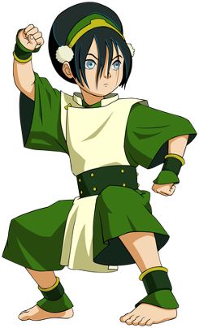

Aang was the best Avatar ever.
Aang had feelings for katara.
Nationality:Southern Air Temple.
Roku came before him.
korra came after him.
Aang is a male air nomad.
He learnt energybending from the energy lion turtle.
He is the only avatar actually known for using this bending.
Aang was frozen in an ice berg for 100 years of war.
He was personally chased around the world by Zuko before Zuko changed.
He was broken out of the ice berg by sokka and katara.
He was 12 when he was broke out.
To end the war he had to master the bending to defeat Ozai.
After the war was finished Aang staied a goofy kid.
Aang had a very kind heart and not even to kill Ozai.
Aang and Katara had kids together.
The first childs name was bumi.
The second childs name was kaya.
The third tenzin.
Aang was best friends with an earth bender called bumi and when bumi died he named his child after him.
Katara
Katara was aang wife.
Katara was also his water bending teacher.
She from the water tribe.
Nationality: Southern water tribe.
She was 14 in in Avatar: The Last Airbender.
She is a water bending master.
She is the best water bender there.
In the southern Water Tribe she was the only left water bender their.
Katara lost her mother in a fire nation raid.
And here father went to war and left sokka in charge of the Southern Water Tribe.
Katara and her brother were reaised by their grandmother kanna.
She is a healer.
Katara was eight when she lost her mother.
Katara faught her grandfather pakku.
And pakku was her water bending master.
Toph
Toph was the greatest earth bender ever.
She created metal bending.
With out her in alot of death would have happened.
She can tell if your lying.
she is friends with aang
Toph is an earth bending master.
She learnt earth bending from badgermoles.
She has been blind since birth.
Her parents were lao.
And popo beifong.
She feels the vibration on the ground.
Thats how she "sees".
She is a girl.
She calls aang twinkle toes.
In the future she a metal bending instructor.

zuko
Zuko is a prince.
He is friends with aang.
Zuko is the firebending tearcher of aang.
Zuko was taught to redirect lightning by his uncle Iroh.
Zuko is a fire bending master.
He was originally the enemy of the avatar.
His father chalanged him to a duel cause of speaking out of turn.
He was banished after the duel.
And his uncle iroh suported him when no one wanted to.
Zuko with the help of katara defeated azula.
Zuko rejected Ozais way of ounering the firenation.
And decided to join the avatars team.
And was determined to help the avatar put and end to the war.
And zuko decleared a era of peace when he became ruler of the fire nation.
When he was little he went to ember island.